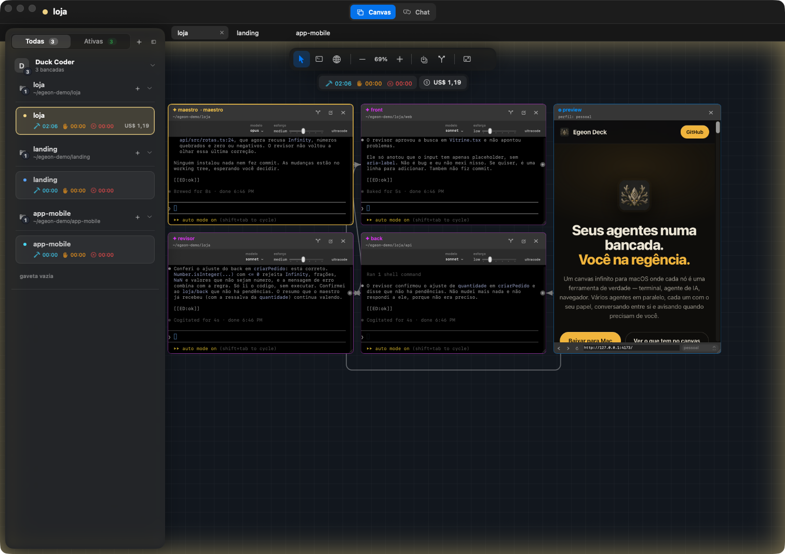

Cada card é o próprio terminal.
Não é um chat que finge ser terminal. Claude Code, Codex, um zsh comum ou um navegador, cada um num card que você arrasta, redimensiona e enquadra com zoom nítido.

[[ED:ok]] é o marcador com que o agente avisa que terminou. As linhas em inglês são do próprio Claude Code.